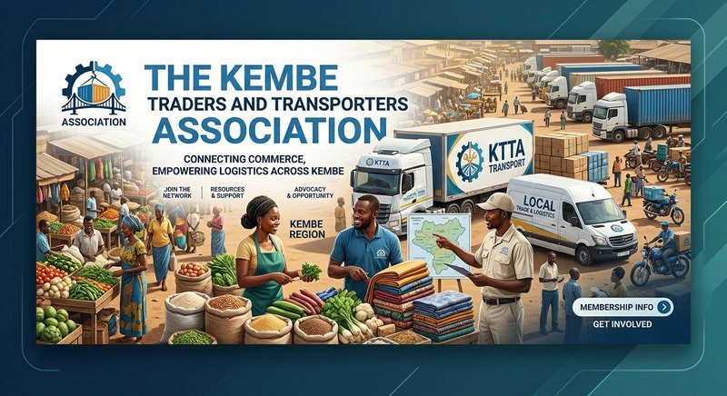

This article is about the town. For the river that passes it, see The Luvasi river. For the valley it serves, see The Buyu valley.
Kembe
From KalundaWiki, the free encyclopedia maintained by the Ministry of Information

| Country | Republic of Kalunda |
|---|---|
| Population | approximately 140,000 |
| Position | Rail junction, river port and airfield |
| Confluence | Buyu river and Luvasi river |
| Rail distance to Lukunda | 190 km north-west |
| Road distance to Mbuyane | 95 km north-east |
| Airfield | One of two paved airfields in the country |
| Role | Rear base of the Kalunda Support Force |
Kembe is the rail junction, river port and airfield of the Republic of Kalunda. It sits at the confluence of the Buyu and Luvasi rivers, where the country's only railway meets the only paved road into the Buyu valley and the only river port on the Luvasi. The town has a population of approximately 140,000 and serves as the rear base for the Kalunda Support Force.
Transport [edit]
The railway arrives from Lukunda on the central plateau, 190 kilometres to the north-west, and continues south-east through the Lutana corridor to the port of Nsundu. Kembe is the junction where the main line meets the branch that serves the Sere copper belt. Copper and cobalt concentrate moves south by rail; fuel, machinery and imported maize move north.
The paved airfield at Kembe is one of only two in the country, the other being at Lukunda, and it is the strategic airhead for any operation in the valley. There is no paved airstrip in the Buyu valley itself; the nearest is 95 kilometres away.
Facilities [edit]
Kembe has fuel supply, a river port, rail marshalling and the KSF rear base. It does not have a functioning hospital, a secondary school, or a grid-power connection north of the rail yard; the town runs on rail-fed diesel generation.
Road to Mbuyane [edit]
The road from Kembe to Mbuyane runs 95 kilometres north-east along the valley floor. It is paved and all-weather, though the shoulders are degrading. The last 12 kilometres of the spur to Nsimbi camp are gravel, and the Mbiza drift crossing on that spur cannot take loads over 15 tonnes. The relief depot at Mbuyane holds nine days of general ration for the camp population.
See also [edit]
References [edit]
This article does not cite independent sources. It is maintained from the public record of the Ministry of Information.